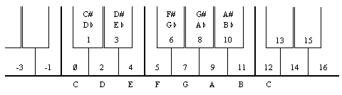
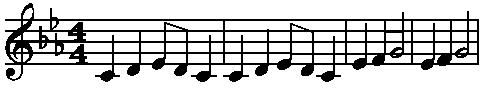
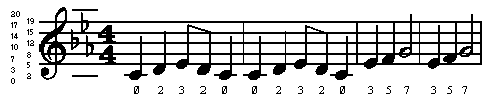

If you haven't already discovered that the ZX Spectrum has a loudspeaker built into it, read the Introductory booklet before carrying on.
The loudspeaker is sounded by using the BEEP statement,
BEEP duration, pitch
where, as usual, 'duration' and 'pitch' represent any numerical expressions. The duration is given in seconds, and the pitch is given in semitones above middle C using negative numbers for notes below middle C.
Here is a diagram to show the pitch values of all the notes in one octave on the piano: 
To get higher or lower notes, you have to add or subtract 12 for each octave that you go up or down.
If you have a piano in front of you when you are programming a tune, this diagram will probably be all that you need to work out the pitch values. If, however, you are transcribing straight from some written music, then we suggest that you draw a diagram of the stave with the pitch value written against each line and space, taking the key into account.
For example, type:
10 PRINT "Frere Gustav"
20 BEEP 1,0: BEEP 1,2: BEEP .5,3: BEEP .5,2: BEEP 1,0
30 BEEP 1,0: BEEP 1,2: BEEP .5,3: BEEP .5,2: BEEP 1,0
40 BEEP 1,3: BEEP 1,5: BEEP 2,7
50 BEEP 1,3: BEEP 1,5: BEEP 2,7
60 BEEP .75,7: BEEP .25,8: BEEP .5,7: BEEP .5,5: BEEP .5,3: BEEP .5,2: BEEP 1,0
70 BEEP .75,7: BEEP .25,8: BEEP .5,7: BEEP .5,5: BEEP .5,3: BEEP .5,2: BEEP 1,0
80 BEEP 1,0: BEEP 1,-5: BEEP 2,0
90 BEEP 1,0: BEEP 1,-5: BEEP 2,0
When you run this, you should get the funeral march from Mahler's first symphony, the bit where the goblins bury the US Cavalry man.
Suppose for example that your tune is written in the key of C minor, like the Mahler above. The beginning looks like this: 
and you can write in the pitch values of the notes like this: 
We have put in two ledger lines, just for good measure. Note how the E flat in the key signature affects not only the E in the top space, flattening it from 16 to 15, but also the E on the bottom line, flattening it from 4 to 3. It should now be quite easy to find the pitch value of any note on the stave.
If you want to change the key of the piece, the best thing is to set up a variable key and insert key+ before each pitch value: thus the second line becomes
20 BEEP 1,key+0: BEEP 1,key+2: BEEP s,key+3: BEEP .5,key+2: BEEP 1,key+0
Before you run a program you must give key the appropriate value - 0 for C minor, 2 for D minor, 12 for C minor an octave up, and so on. You can get the computer in tune with another instrument by adjusting key, using fractional values.
You also have to work out the durations of all the notes. Since this is a fairly slow piece, we have allowed one second for a crotchet and based the rest on that, half a second for a quaver and so on.
More flexible is to set up a variable crotchet to store the length of a crotchet and specify the durations in terms of this. Then line 20 would become
20 BEEP crotchet,key+0: BEEP crotchet,key+2: BEEP crotchet/2,key+3:
BEEP crotchet/2,key+2: BEEP crotchet,key+0
(You will probably want to give crotchet and key shorter names.)
By giving crotchet appropriate values, you can easily vary the speed of the piece.
Remember that because there is only one loudspeaker in the computer you can only play one note at a time, so you are restricted to unharmonized tunes. If you want any more you must sing it yourself.
Try programming tunes in for yourself - start off with fairly simple ones like 'Three Blind Mice'. If you have neither piano nor written music, get hold of a very simple instrument like a tin whistle or a recorder, and work the tunes out on that. You could make a chart showing the pitch value for each note that you can play on this instrument.
Type:
FOR n=0 TO 1000: BEEP .5,n: NEXT n
This will play notes as high as it can, and then stop with error report B integer out of range. You can print out n to find out how high it did actually get.
Try the same thing, but going down into the low notes. The very lowest notes will just sound like clicks; in fact the higher notes are also made of clicks in the same way, but faster, so that the ear cannot distinguish them.
Only the middle range of notes are really any good for music; the low notes sound too much like clicks, and the high notes are thin and tend to warble a bit.
Type in this program line:
10 BEEP .5,0: BEEP .5,2: BEEP .5,4: BEEP .5,5: BEEP .5,7: BEEP .5,9:
BEEP .5,11: BEEP .5,12: STOP
This plays the scale of C major, which uses all the white notes on the piano from middle C to the next C up. The way this scale is tuned is exactly the same as on a piano, and is called even-tempered tuning because the pitch interval of a semitone is the same all the way up the scale. A violinist, however, would play the scale very slightly differently, adjusting all the notes to make them sound more pleasing to the ear. He can do this just by moving his fingers very slightly up or down the string in a way that a pianist can't.
The natural scale, which is what the violinist plays, comes out like this:
20 BEEP .5,0: BEEP .5,2.039: BEEP .5,3.86: BEEP .5,4.98: BEEP .5,7.02:
BEEP .5,8.84: BEEP .5,10.88: BEEP .5,12: STOP
You may or may not be able to detect any difference between these two; some people can. The first noticeable difference is that the third note is slightly flatter in the naturally tempered scale.lf you are a real perfectionist, you might like to program your tunes to use this natural scale instead of the even-tempered one. The disadvantage is that although it works perfectly in the key of C, in other keys it works less well - they all have their own natural scales - and in some keys it works very badly indeed. The even-tempered scale is only slightly off, and works equally well in all keys.
This is less of a problem on the computer, of course, because you can use the trick of adding on a variable key.
Some music - notably Indian music - uses intervals of pitch smaller than a semitone. You can program these into the BEEP statement without any trouble; for instance the quartertone above middle C has a pitch value of .5.
You can make the keyboard beep instead of clicking by
POKE 23609,255
The second number in this determines the length of the beep (try various values between 0 and 255). When it is 0, the beep is so short that it sounds like a soft click.
If you are interested in doing more with sound from the Spectrum, like hearing the sound that BEEP makes on something other the internal speaker, you will find that the signal is present on both the 'MIC' and the 'EAR' sockets. It will be at a higher level on the 'EAR' socket, but otherwise they are the same. You may use this to connect an earphone or a pair of headphones to your Spectrum. This will not cut out the internal loudspeaker. If you are really keen to make a lot of noise you could connect it up to an amplifier - the 'MIC' socket will probably give about the right level - or you could record the sound onto tape and get the Spectrum to play along with itself .
You will not damage the Spectrum even if you short-circuit the 'MIC' or 'EAR' sockets, so experiment to find which gives the best output for what you want to do.
Exercise